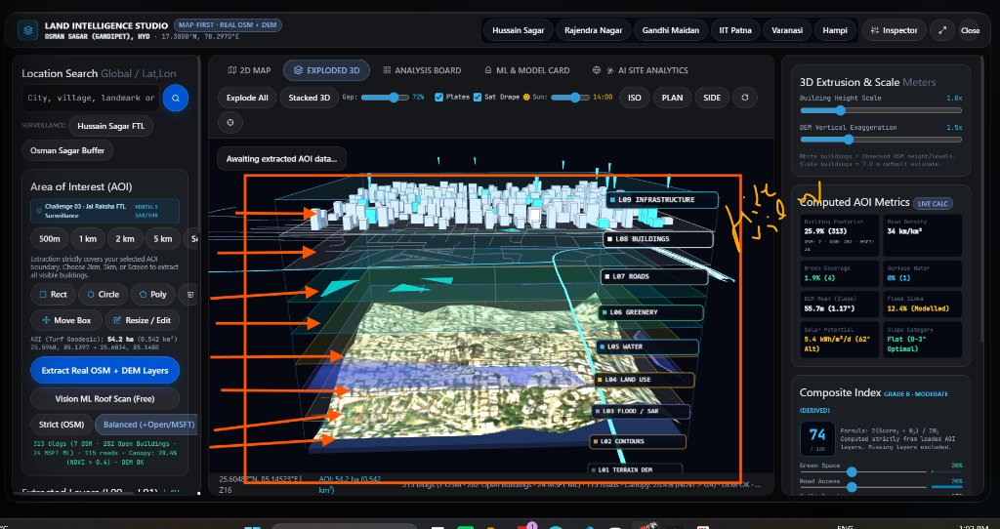
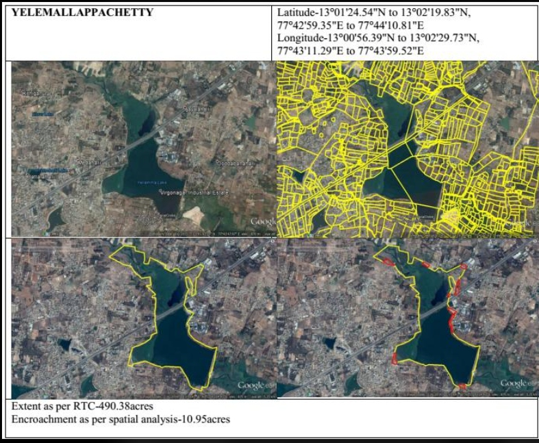
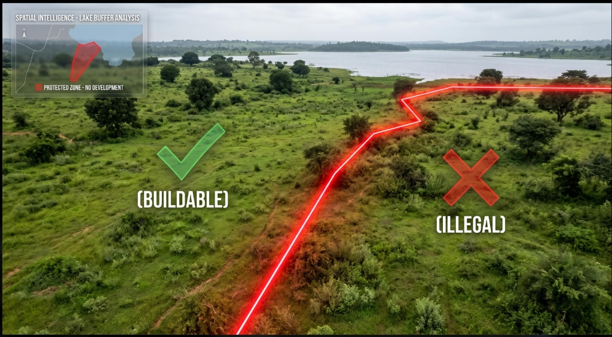
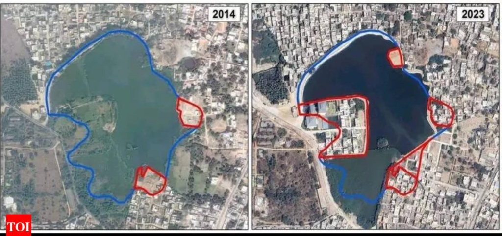

Intercepting illegal lake-bed encroachment and government land grabbing at the initial soil-filling phase — linking Copernicus Sentinel-1/2 satellites with Dharani Cadastral Survey Records for court-admissible enforcement before concrete slabs are poured.
Copernicus Sentinel-2 (10m Optical) + Sentinel-1 SAR (C-Band Radar) penetrates cloud cover and monsoons.
Every flagged encroachment maps directly to Revenue Cadastral Survey Numbers (Sy. No.) for Section 23 notices.
$0 API cost, zero paid proprietary SDK billing. Prithvi-EO 2.0 & SegFormer-B0 running on in-house infrastructure.
Rapid urbanisation around Hyderabad and Telangana's Tier-2 hubs has placed existential pressure on water bodies, lake beds, and valuable government land.
Encroachments are discovered only after multi-story RCC buildings are occupied. Demolitions face high court stays, public litigation, and irreversible aquifer destruction.
Irrigation Department FTL gazette maps, Municipal town planning GIS, and Revenue Dharani cadastral records exist in silos without automated cross-referencing.
Shrinking lake spread exacerbates urban flash flooding in Hyderabad while depleting the water table for surrounding communities.
A continuous digital surveillance envelope combining monthly satellite passes, radar penetration, and automated cadastral survey matching.
Sentinel-2 optical & Sentinel-1 SAR compare 5-day and 30-day surface reflectance to flag fresh soil dumping, boundary stone shifting, or tin-shed fabrication immediately.
Legally gazetted Full Tank Level (FTL) and statutory 30-meter buffer zones are overlaid directly on Revenue Survey parcel numbers (Sy. No.) for incontrovertible jurisdiction.
Generates instant PDF audit reports with time-stamped satellite imagery, SHA-256 cryptographic hashes, and exact acreage calculations ready for Revenue notice dispatch.
Trained on high-resolution multi-spectral imagery to classify 7 distinct land-use and land-cover categories with sub-meter spatial precision:

Mirroring official High Court and Revenue Lokayukta survey mandates, the engine cross-references spatial observations against gazetted records:

Removing ambiguity in the field: BHU LOKA's 3D Perspective Raycasting visualizes the statutory 30m boundary directly against the natural shoreline topography.
Clear, unencumbered land beyond the 30-meter buffer permitted for lawful municipal construction and title registration.
Strictly prohibited water-spread zone. Red glowing spatial boundary identifies any development attempt in real-time.
Instant corner inset provides revenue survey coordinates, bounding survey stones, and direct distance to the high-flood waterline.

Automated change-detection pipelines compare historic baseline optical satellite imagery against current surveillance passes, highlighting shoreline shrinkage and unauthorized buildings in red outlines.
Enforcement officers drag an interactive vertical swipe divider directly in BHU LOKA to visually compare historical 2014 baseline imagery against the latest 2026 satellite pass.

Eliminating procedural delays: How BHU LOKA connects Revenue, Municipal Administration, Irrigation, and HYDRAA in a closed loop.
Sentinel-2 optical & SAR backscatter flags a +0.2 ha soil-filling anomaly inside the FTL perimeter within 5 days.
System auto-identifies Revenue Survey Number (e.g. Sy. No. 108/2) and owner/occupant registry from Dharani database.
Revenue Inspector and Assistant Executive Engineer dispatched with mobile georeferenced boundary coordinates.
Section 23/24 notice served and HYDRAA field enforcement clears unauthorized structures before foundation cures.
While calibrated for Hyderabad’s lakes (Hussain Sagar, Osman Sagar, Himayat Sagar, Durgam Cheruvu), BHU LOKA features pre-configured surveillance hotspots across all 36 States & UTs:
Cadastral Waterbody Protection (Protecting Lakes and Government Land) directly solves the most visible, high-impact governance challenge in Telangana today. The working prototype, scientific 4-quadrant report, and live 3D digital twin are 100% operational in BHU LOKA.
Live Leaflet 2D, Three.js 3D, and AI Site Analytics with zero fake data and authentic cadastral overlays.
Automatic Section 23/24 PDF dossier generation with survey numbers and cryptographic verification hashes.
Fully formed 10-slide executive pitch deck ready to present in browser or export to PDF with one click.